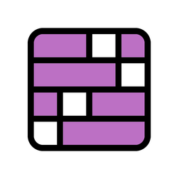
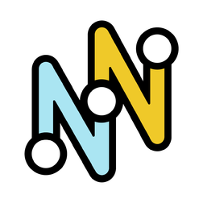

Sunday, 9th of November
Recopilación de nuestras aventuras en nuestro formato favorito.
Wordle
A way to make a bit better your least favourite one.
Sunday, 9 Nov
Connections
Group words from our adventures together.
Sunday, 9 Nov

Strands
Unravel the hidden theme by connecting letters.
Sunday, 9 Nov

The Mini
A quick crossword for when you’re short on time.
Sunday, 9 Nov
Made with ♡ by Rodri